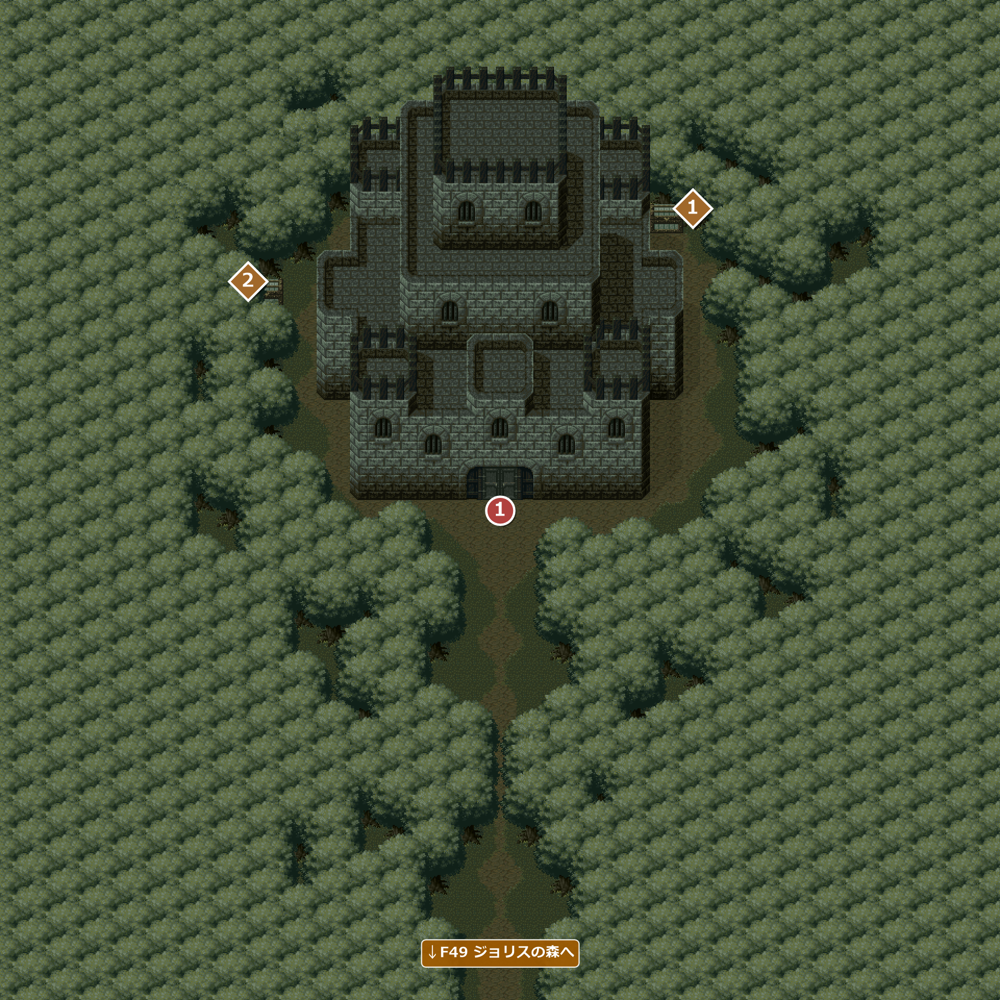
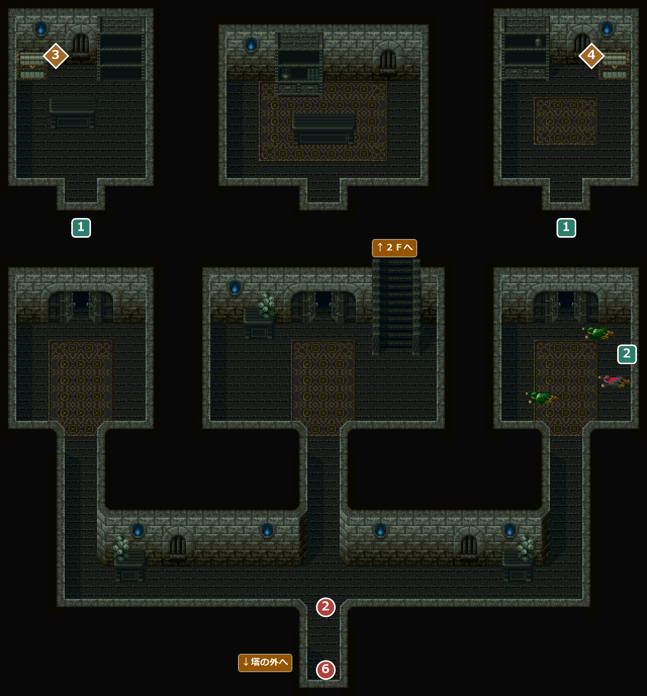
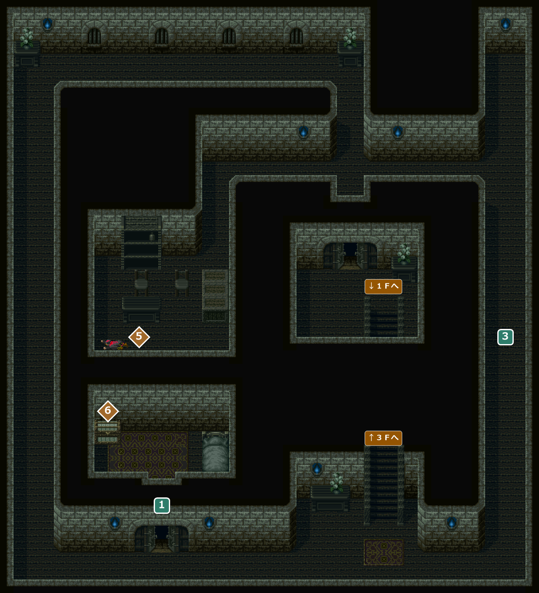
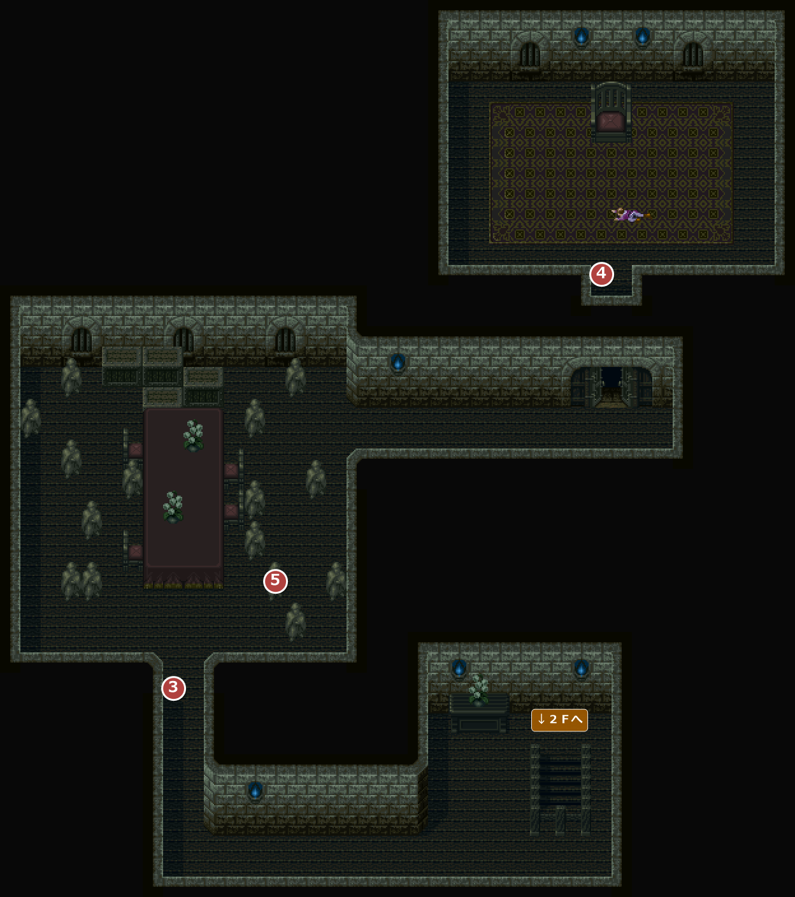

FIELD51
ドドルの塔
エンカウント率0% / 0.78% / 1.17% / 1.95%ジョリスの森の北にそびえる、怪物ドドルの塔。連れ去られたロミーを救うため、ウルフたちと乗り込む。
→ ほかの FIELD へ1メインイベント1サブイベント1宝箱・落ちている物
5100塔の外

エンカウント
エンカウントなし。
イベント
1
塔の扉
場所: 塔の正面の扉(X58-60 Y61)
扉が開かずに困っていると、仲間を連れたウルフが追いついてきて、扉を開けてくれる。
次へ塔の１Ｆへ(②)。
宝箱・落ちている物
1
宝箱
場所: 塔の北東の角(X78-80 Y29)
「箱の中には、財宝が入っていた。」
入手 財宝
財宝
2
呪いの宝箱
場所: 塔の北西の角(X30-32 Y37)
中身 呪い
呪い
5101１Ｆ

エンカウント
1歩ごとに 0.78%(平均 128 歩に1回)。戦闘になったときに出る組と、その確率:
| ID | 確率 | 前列 | 後列 |
|---|---|---|---|
| 129 | 22.2% | 無音草×2 | － |
| 130 | 55.6% | ゾンビ | ゾンビ |
| 131 | 22.2% | 無音草×3 | － |
イベント
2
どっちだ？
場所: １Ｆの入口の先(X38-40 Y75)
分かれ道でフィデレに道を聞くが、「右っ！」「じゃ左っ！」「じゃ真っ直ぐっ！」とまるで当てにならない。本筋を進めるなら真っ直ぐ、右と左には宝箱がある。
次へ中央の部屋の階段から２Ｆ、３Ｆへ(③)。
6
町までひとっとび
場所: １Ｆの入口(X38-40 Y87)
ガンドを倒した後に１Ｆの入口から出ようとすると、フィデレが「あたしの魔法で町までひとっとびぃ！」——塔の外には出ず、そのままイントラダへ一気に移動する。
次へF46 沼の町イントラダの町長の家へ。
サブイベント
1
2
倒れた男
場所: １Ｆの東の部屋(X72-76 Y45-49)
部屋の手前で、フィデレが冒険者たちの死体の臭いに「ぎゃー、くさーい！」。奥に倒れているのはウルフの仲間の男で、２Ｆの右の道に罠があること、ウルフが先に行ったことを伝える。
宝箱・落ちている物
3
宝箱
場所: １Ｆの北西の部屋(X2-4 Y11)
「箱を開けると、中にはのどあめと薬のビンが入っていた。」
入手 スーパーのどあめ×6
スーパーのどあめ×6 桃色の小ビン×6
桃色の小ビン×6
4
宝箱
場所: １Ｆの北東の部屋(X74-76 Y11)
「箱を開けると、中には弓が入っていた。」
入手 クロスボウ
クロスボウ
！トラビスを連れていると、トラビス「おほっ！ これはなかなか素晴らしい弓だ！」と一言。
5102２Ｆ

エンカウント
1歩ごとに 1.17%(平均 85.3 歩に1回)。戦闘になったときに出る組と、その確率:
| ID | 確率 | 前列 | 後列 |
|---|---|---|---|
| 131 | 22.2% | 無音草×3 | － |
| 132 | 44.4% | 無音草×2 | ゾンビ |
| 133 | 33.3% | 無音草×2ゾンビ | ゾンビ |
イベント
サブイベント
3
落とし穴
場所: ２Ｆの東の通路(X72-76 Y45-49)
倒れた男が言っていた罠。踏むと「うわっ！？」と１Ｆの東の部屋へ落とされる。通るたびに何度でも落とされる。派手に落ちるが、ダメージは無い。
宝箱・落ちている物
5
落ちている物
場所: ２Ｆの西の部屋の死体(X14-18 Y49-53)
「おや？死体のふところに楽譜が…」
入手 凍結の歌
凍結の歌
6
宝箱
場所: ２Ｆの南西の部屋(X14-16 Y67)
「箱を開けると、中には薬のビンが入っていた。」
入手桃色の小ビン×5
5103３Ｆ

エンカウント
1歩ごとに 1.95%(平均 51.2 歩に1回)。戦闘になったときに出る組と、その確率:
| ID | 確率 | 前列 | 後列 |
|---|---|---|---|
| 133 | 33.3% | 無音草×2ゾンビ | ゾンビ |
| 134 | 33.3% | ゾンビ×3 | ゾンビ×3 |
| 135 | 33.3% | 無音草×3 | ゾンビ×3 |
イベント
3
石像のロミー
場所: ３Ｆの石像の広間の南(X16-22 Y65)
先に来ていたウルフが、石像に変えられたロミーを見つけて叫ぶ。ドドルの魔法の仕業に違いない。
バグこの場面で、パーティーにいないはずのアイリスが「え…！！？」と喋る(アイリスはホタの町で抜けていて、この時期は必ずいない)。
次へ３Ｆの北東の部屋へ(④)。
4
ドドル戦闘
場所: ３Ｆの北東の部屋の入口(X60-62 Y27)
フィデレが婆ちゃんから教わった封じの呪文を唱えるが、効かない。ドドルは自分が戦うまでもないと、手下のガンドをけしかける。ガンドを倒すと、ドドルは「今はまだ戦えん」と言って去っていく。先に挑んでいたウルフは倒れていたが、無事だった。
戦闘ガンド(前列)
バグフエダの町民の家(部屋4011)の男と奇数回話してから来ると、この部屋で倒れているはずのウルフの姿が描かれない(見た目だけで、戦いの後はウルフが立っている)。男と話すたびに切り替わり、セーブにも残る。
次へ石像の広間へ(⑤)。
5
ロミーとの再会
場所: ３Ｆの石像の広間(X24-34 Y57)
ドドルが去って、ロミーが元の姿に戻る。ウルフはロミーをイントラダまで送っていくので、一緒に町長の家へ来るよう誘う。
次へ１Ｆの入口へ(⑥)。